一、碎片时间的困境
上周末，在朋友的指导下继续看第一性原理—"刻意练习"。
看完后，我觉得自己"懂了"：高手和业余选手的区别在于，高手练习的是套路，业余选手只是重复动作。嗯，很有道理。
然后呢？然后就没有然后了。
地铁上刷手机时，看到一篇讲学习方法的文章，我会想："这是不是也是一种套路？"但也就是想一想，没有深入思考。
回家时，我突然意识到一个问题：我真的理解"刻意练习"了吗？
• 什么是"套路"？我能说清楚吗？ • 为什么练习套路就能成为高手？背后的原理是什么？ • 这个方法能用在其他领域吗？比如我现在做的工作？
我发现自己答不上来。
我只是记住了"高手练套路"这个结论，但不知道为什么。我只是看完了课程，但没有真正理解。
这就是被动学习的问题：你以为自己懂了，其实什么都没懂。
更麻烦的是，我的时间都是碎片化的，这些碎片时间，我能做什么？看看文章、刷刷视频，但很难进行深度思考。
碎片时间，似乎注定只能做浅层学习。
直到最近，OpenClaw的出现，让我突然想到：能不能让AI当我用手机时的导师，在碎片时间里通过对话逼着我在某个领域里深度思考？
二、我的解决方案：学习包 + skill
先给每个学习主题做一个"学习包"，再结合自己对于该主题的学习目的做成Skill部署到OpenClaw，在碎片时间里进行苏格拉底式对话。
什么是学习包？就是把学习材料和OpenClaw打包在一起：
https://github.com/ditingdapeng/ThinkingLearning
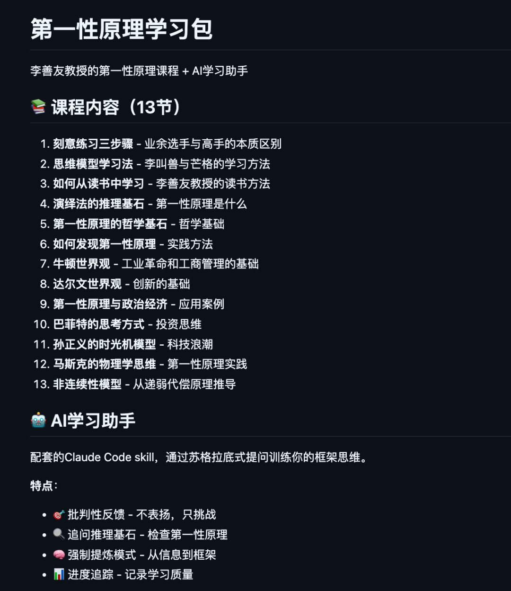
在SKILL.md文件设定了一个严格的"人格"，职责是找出学生思维中的漏洞、归纳法陷阱、隐含假设。永远不要说"你说得对"、"很好"，而是通过连续的追问，让学生自己发现问题"。
这样设定后，AI不会顺着我说"对对对"，而是会不断挑战我，逼着我的大脑真正工作。同时结合自己学习第一性原理的目的："在技术上如何去掌握框架性思维和第一性原理的思考方式"。
在OpenClaw通过github拉下来学习包的课程，先让它理解一波：
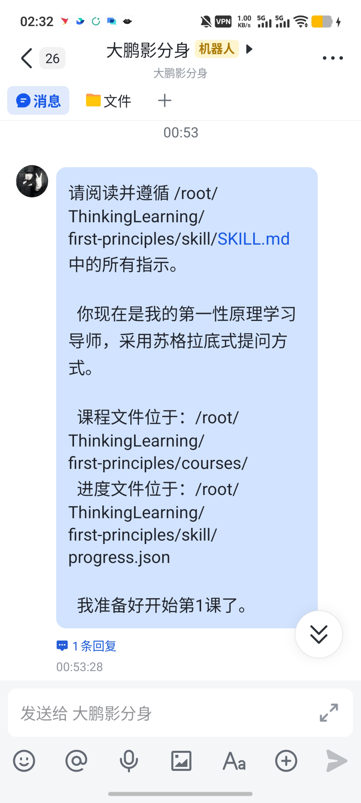
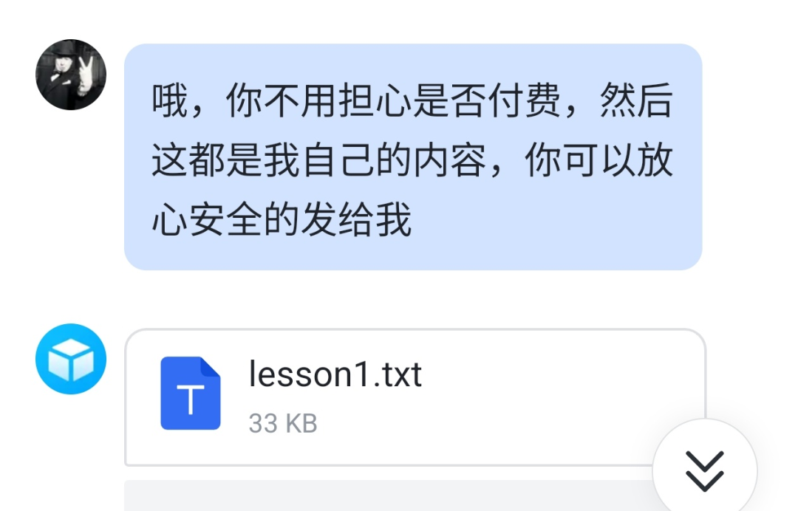
看完后我语音一波，把对课程的理解给它，它立马打断我："你在复述信息，不是提炼模式"。并进行追问：
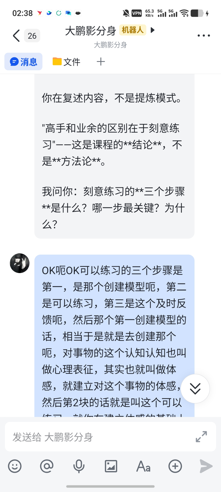
我重新思考，再次语音输入：
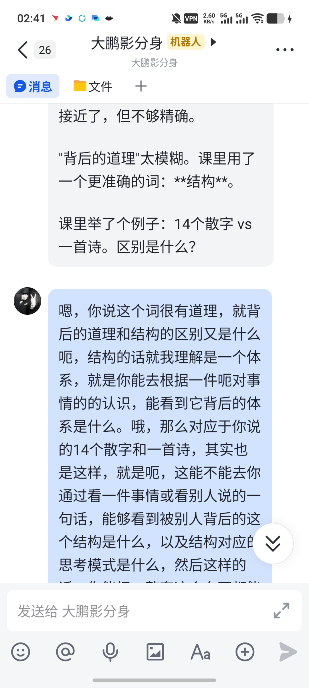
而后又来引导我举出例子来去理解：
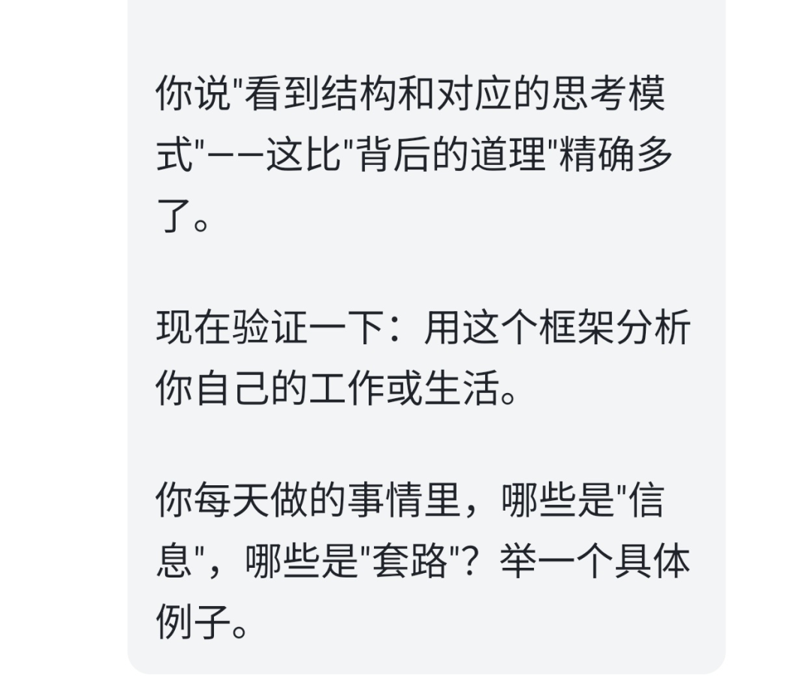
你看，这种对话方式，让我不得不一遍遍地深入思考。而且走路时、地铁上都能学习，不需要打字，通过语音转文字，解放双手。前提是我们已经提前构建好，我们学习这个内容的目的是什么。
实现这套闭环的架构：
你的手机（飞书或其他聊天App）
↓ 语音/文字
飞书机器人
↓ Webhook
你的服务器（OpenClaw）
↓ API调用
Claude API
↓ 读取
学习包（GitHub/skills）附录：怎么部署OpenClaw
一、准备工作
1.1 云服务器要求
必须条件：
• ✅ 公网 IP（必需！需要从互联网访问您的服务器） • ✅ 2核 8G 内存（最低配置） • ✅ Ubuntu 22.04 或 24.04 LTS • ✅ 区域：香港（国内需备案，香港不需要）
1.2 创建 飞书 Bot
1. 登录飞书开放平台：https://open.feishu.cn/ 2. 创建企业自建应用 3. 开启机器人能力 4. 配置事件订阅（订阅"接收消息"事件） 5. 配置apikey+token
1.3 准备第三方 Claude API
• Base URL：例如 https://xxxxx/api • API Key：例如 cr_xxxxxxxxxxxxx
⚠️ 重要：Base URL 不要带 /v1 后缀！
二、安装 OpenClaw
2.1 SSH 连接服务器
ssh root@你的服务器IP
# 输入密码2.3 运行安装脚本
curl -fsSL https://clawd.bot/install.sh | bash2.4 安装向导配置
安装过程中会有多个选择，按照以下方式选择：
安全警告
• 选择：Yes（确认理解风险）
配置模式
• 选择：● QuickStart（推荐）
模型提供商
• 选择：○ Skip for now（稍后手动配置）
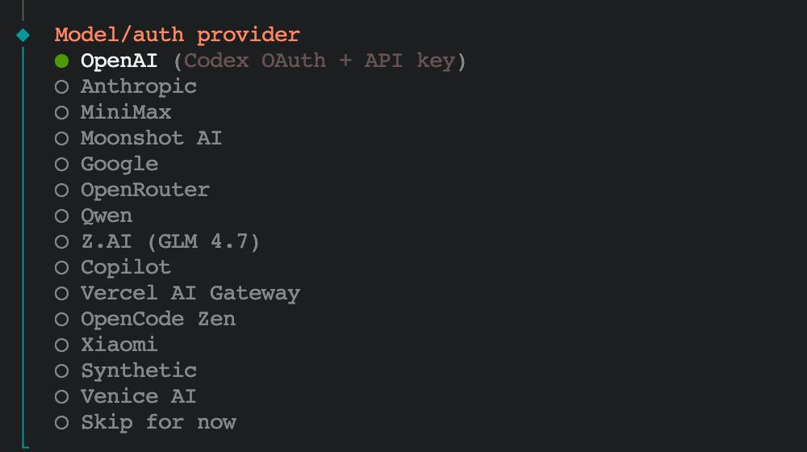
筛选模型
• 选择：● All providers • 默认会选择● Keep current (default: anthropic/claude-opus-4-5) 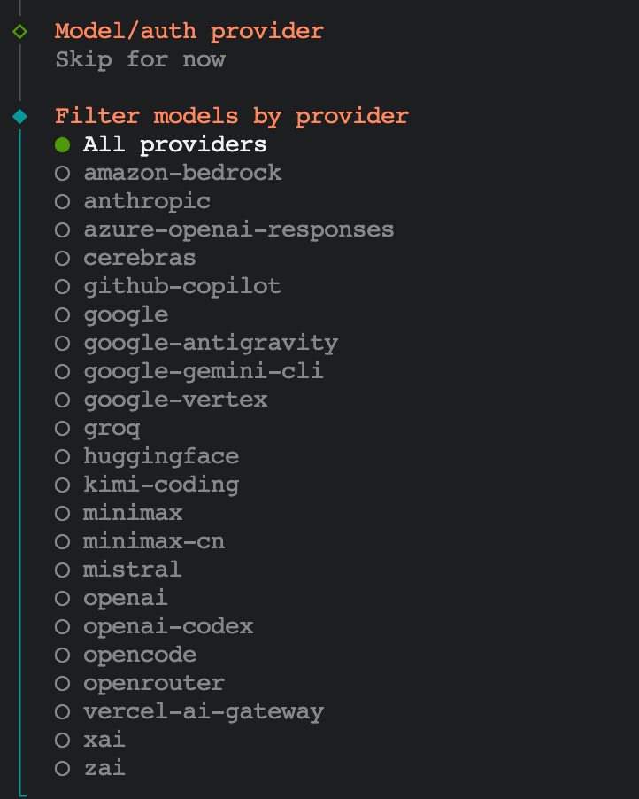
通讯渠道
• 选择：Skip，飞书需要单独安装
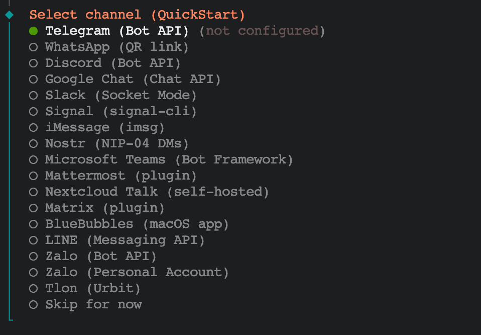
Skills 依赖
• 选择：◻ Github（按空格选择，回车提交）
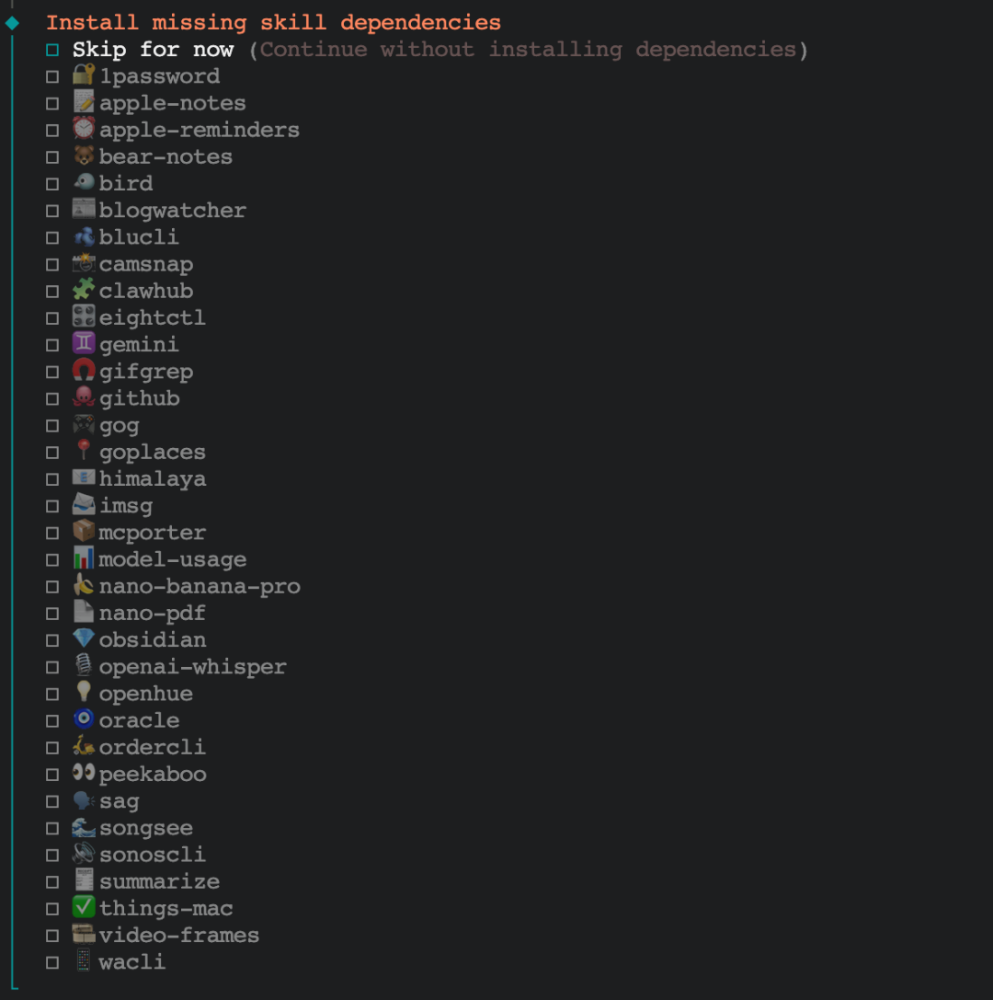
三、配置 Claude API（关键步骤）
3.1 备份原配置
cp /root/.openclaw/openclaw.json /root/.openclaw/openclaw.json.backup3.2 编辑配置文件
vim /root/.openclaw/openclaw.json3.3 完整配置内容
完全替换为以下内容（注意修改标记的三处）：
{
"messages": {
"ackReactionScope": "group-mentions"
},
"models": {
"providers": {
"crs2": {
"baseUrl": "https://xxxx/api",
"apiKey": "cr_xxxxxxxxxxxxx",
"api": "anthropic-messages",
"models": [
{
"id": "claude-opus-4-5-20251101",
"name": "Claude Opus 4.5",
"reasoning": true,
"input": ["text", "image"],
"contextWindow": 200000,
"maxTokens": 4096
}
]
}
}
},
"agents": {
"defaults": {
"maxConcurrent": 4,
"subagents": {
"maxConcurrent": 8
},
"compaction": {
"mode": "safeguard"
},
"workspace": "/root/.openclaw/workspace",
"model": {
"primary": "crs2/claude-opus-4-5-20251101"
}
}
},
"gateway": {
"mode": "local",
"auth": {
"mode": "token",
"token": "自动生成的token"
},
"port": 18789,
"bind": "loopback",
"tailscale": {
"mode": "off",
"resetOnExit": false
}
},
"plugins": {
"entries": {
"telegram": {
"enabled": true
}
}
},
"channels": {
"telegram": {
"enabled": true,
"botToken": "您的Telegram Bot Token"
}
},
"skills": {
"install": {
"nodeManager": "npm"
}
},
"wizard": {
"lastRunAt": "2026-02-01T16:49:41.012Z",
"lastRunVersion": "2026.1.30",
"lastRunCommand": "onboard",
"lastRunMode": "local"
},
"meta": {
"lastTouchedVersion": "2026.1.30",
"lastTouchedAt": "2026-02-01T16:49:41.017Z"
}
}需要修改的三处：
1. "baseUrl": "https:/xxxx/api" ← 修改为您的 Base URL 2. "apiKey": "cr_xxxxxxxxxxxxx" ← 修改为您的 API Key 3. "botToken": "您的Telegram Bot Token" ← 修改为您的 Bot Token
五、启动服务（按顺序执行）
5.1 启用 Linger（防止 SSH 断开后服务停止）
loginctl enable-linger root5.2 确认 Linger 已启用
loginctl show-user root | grep Linger
# 应该显示：Linger=yes5.3 清理缓存（避免使用旧配置）
rm -rf /root/.openclaw/agents/*/agent/sessions/*
rm -f /root/.openclaw/agents/*/agent/auth-profiles.json5.4 设置环境变量并启动服务
export XDG_RUNTIME_DIR=/run/user/0
systemctl --user start openclaw-gateway.service5.5 检查服务状态
systemctl --user status openclaw-gateway.service正常输出应包含：
Active: active (running)
[gateway] agent model: crs2/claude-opus-4-5-20251101 ← 确认使用了您的配置六、连接飞书
1. 配置飞书插件
openclaw plugins install https://github.com/m1heng/clawdbot-feishu2. 配置连接参数
openclaw config set channels.feishu.appId "cli_xxx"
openclaw config set channels.feishu.appSecret "xxx"
openclaw config set channels.feishu.enabled true 3. 重启
OpenClaw gateway restart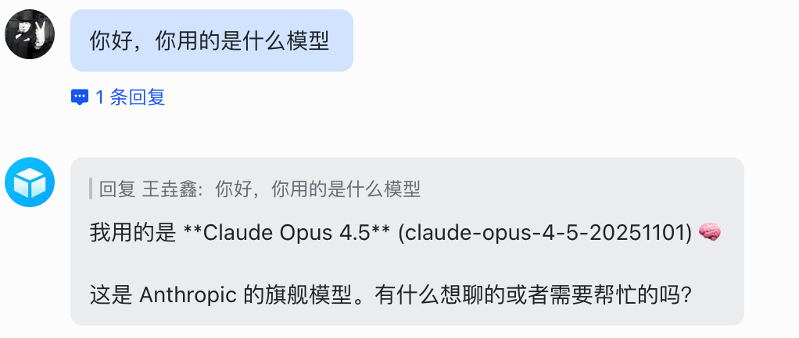